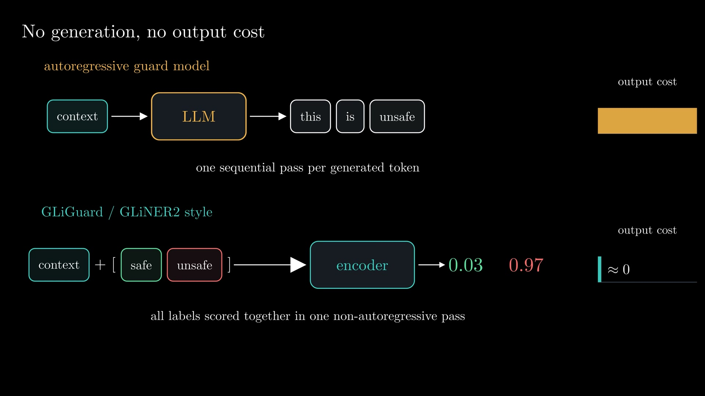
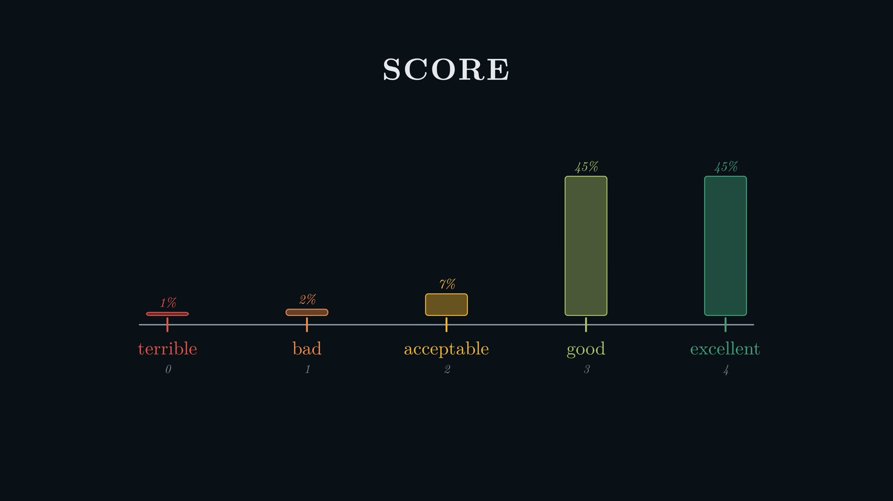
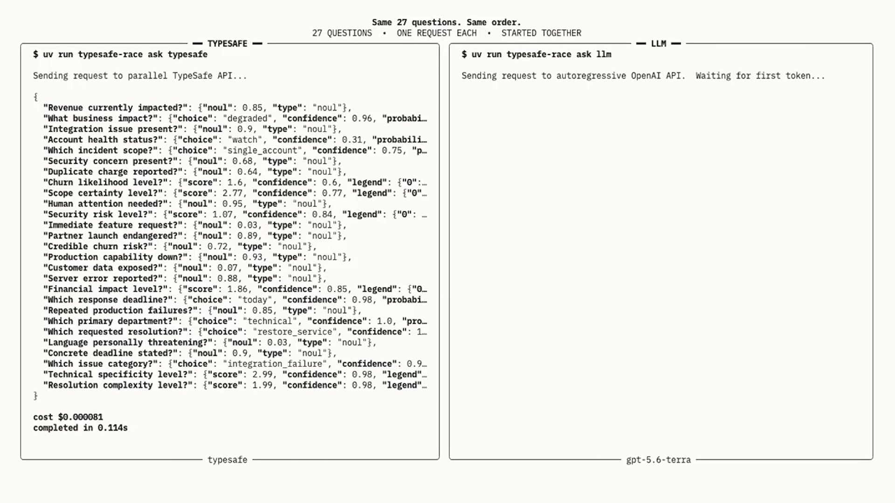
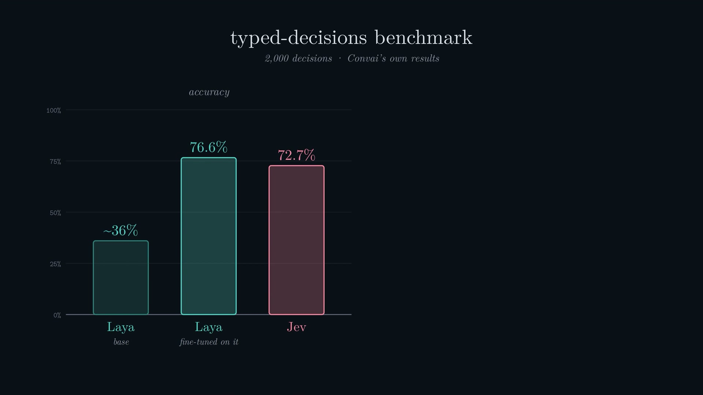
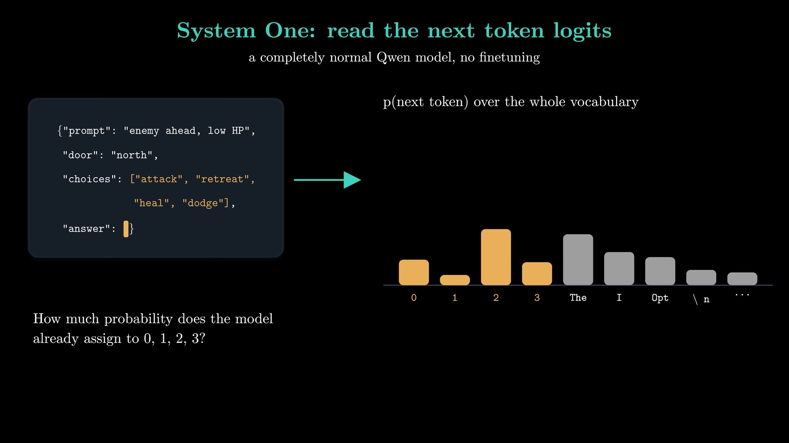
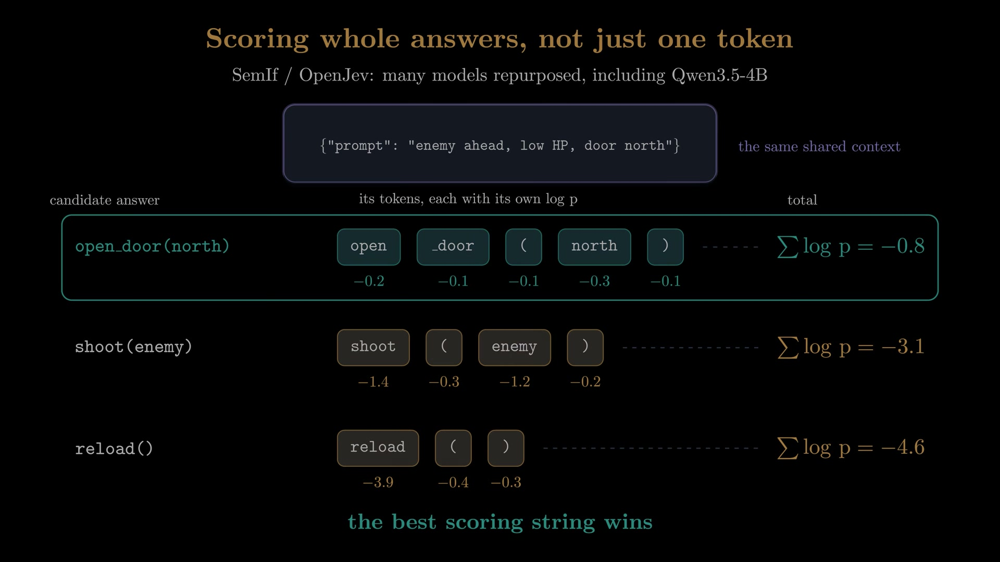

Executive summary
The breakthrough is an interface, not proof of a secret architecture
The video by bycloud argues that many production AI calls do not need generated language. A support workflow may only need a destination queue, an urgency score, or a probability that a refund is requested. A general LLM can produce those answers, but it normally does so through autoregressive generation, after which software validates or parses the generated text back into a deterministic value.
TypeSafe's Jev exposes a narrower contract: provide an unstructured state and typed questions, then receive choices, scores, and probabilities. That makes the model useful at the boundary where fuzzy language understanding must become an exact branch in software. The model can sit inside an agent harness as a router, policy gate, evaluator, or escalation signal while the larger LLM remains responsible for open-ended reasoning and generation.
- Jev is not a chatbot. It is positioned as a System One decision model for bounded questions over caller-supplied state.
- The three core outputs are software-native. Choice selects among options, score estimates a position on an ordered scale, and noul returns the probability that a proposition is true.
- Skipping decoding can reduce latency and cost. The model does not need to emit a sentence or JSON token by token when the application only needs a decision.
- Calibration is operationally valuable. A trustworthy probability can drive auto-execute, review, or escalation policies. A confident-looking number is not enough; calibration must be measured locally.
- Jev's internal architecture is not public. The video's GLiNER2 and GLiGuard discussion is a plausible family resemblance, not a verified description of Jev.
- Early independent evidence is mixed but useful. Recent evaluations support strong latency and cost advantages, while warning that typed readout alone has not established a universal accuracy advantage over comparable probability-based classifiers.
YouTube did not return usable captions for this video, so the transcript was produced locally from the audio with Whisper and technical names were checked against linked papers and repositories. Product prices, speed claims, and benchmark results are time-sensitive and remain attributed to their publishers. The article separates Jev's documented API behavior from the video's architectural hypothesis.
The interface mismatch
Software wants values; language models naturally return strings
Traditional software is rigid but composable: a function returns a boolean, enum, number, or structured object with defined semantics. LLMs are flexible because they accept and produce language, but that flexibility becomes awkward when the next component needs one exact value. Teams add constrained decoding, JSON schemas, validators, retries, and repair logic to make a generative interface behave like an ordinary function.

Typed decision models change the contract. They still need semantic understanding of the state and question, but their output space is bounded before inference begins. This is closer to a learned function than a conversation: the application owns the available actions, and the model estimates which action best fits.
Three primitives
Choice, score, and noul cover many small agent decisions
Choice
Select one declared option, such as a queue, model tier, intent, or tool. The result includes a probability distribution across options.
Score
Place the state on an ordered rubric. Because adjacent levels have order, the distribution can express that an answer lies between “acceptable” and “good.”
Noul
Return the probability that a yes/no proposition is true. The unusual name distinguishes a probabilistic judgment from a hard boolean.

One request can ask several questions about the same state. That matters because the expensive part is often reading the long context. Sharing that representation across multiple heads or question suffixes can make ten small decisions cheaper than ten independent model calls.
Why it can be fast
Remove the decoding loop when no text is needed
Autoregressive generation repeatedly predicts a token, appends it, and runs the model again until the answer is complete. A decision-only path can instead compute scores for the allowed outputs and stop. The largest savings appear when a generative model would otherwise reason at length, emit verbose JSON, or answer many separate binary questions.

Probabilities become policy
Calibration matters more than confidence theater
A probability is valuable when 0.8 means “roughly eight out of ten similar predictions are correct.” With that property, the harness can map uncertainty to action. High confidence can permit a reversible automatic step; a middle band can call a stronger model; low confidence or high consequence can require human review.
The threshold is not universal. An independent 2026 Jev benchmark found that binary probabilities ranked examples well but were poorly placed around a fixed 0.5 threshold on one legal-clause dataset; tuning the threshold on training data raised micro-F1 from 0.50 to 0.75. The lesson is practical: validate reliability diagrams, expected calibration error, and selective-risk curves on your own population before treating probabilities as policy.
Agent harness
Use a decision model at narrow control points
The best fit is not “replace the main LLM.” It is to place a small decision layer around the generative model wherever the action space is known. A master agent can route a task to a sub-agent, decide whether a tool call requires approval, score retrieved evidence, estimate whether an answer is grounded, or determine whether a trace should enter an evaluation queue.
Good candidates
Model routing, queue selection, policy checks, guardrails, retrieval relevance, escalation, trace grading, and bounded next-action selection.
Poor candidates
Writing, synthesis, novel planning, ambiguous tasks with an incomplete option set, or decisions whose rationale must be generated and audited.
Keep deterministic
Authorization, credential scope, hard safety limits, schema validation, transaction invariants, and irreversible enforcement.
Measure continuously
Task accuracy, calibration, coverage at each threshold, abstention quality, cost, latency, drift, and downstream business loss.
Let deterministic code enforce what must never be violated. Let a decision model interpret fuzzy language inside that boundary. Let a generative model handle work that genuinely requires open-ended reasoning or language.
Known versus inferred
The video reverse-engineers a plausible family resemblance
The presenter explicitly notes that TypeSafe has not published a detailed Jev architecture or technical report. The video therefore uses GLiNER2 and GLiGuard as nearby examples. GLiNER2 is a compact bidirectional encoder for schema-driven classification and information extraction. GLiGuard uses a schema-conditioned encoder to classify safety labels in one non-autoregressive pass. Both show how dynamic labels can be inserted into the input, represented by special markers, and scored without generating a response.
That makes them useful explanatory precedents, but it does not establish that Jev uses the same backbone, heads, loss, or training data. The more defensible conclusion is behavioral: Jev accepts runtime-defined questions and returns typed probability distributions. Its internal route to those distributions remains undisclosed.
Open alternatives
Several projects reproduce parts of the decision-only interface

| Approach | Mechanism | Strength | Caution |
|---|---|---|---|
| Jev | Closed hosted decision model with choice, score, and noul outputs. | Purpose-built contract, batching, reported calibration, low hosted cost. | Architecture and training details are not public; external evidence is still young. |
| Laya | ModernBERT-large encoder plus a learned decision head; option markers are scored together. | Open weights, non-autoregressive, self-hostable, explicit calibration training. | Its model card says the base model is weak on its typed benchmark; the strong result comes from task fine-tuning. |
| System One | Prompt an ordinary Qwen model so the next token is a choice index, then read only allowed logits. | Simple, cheap, works with existing LLMs, and shares cached context across questions. | Next-token probabilities were not necessarily trained or calibrated for the decision policy. |
| SemIf | Score complete candidate answer strings against one cached context. | Supports richer actions such as tool calls or longer commands, with auditable open fixtures. | More compute than single-token scoring and still inherits the base model's probability behavior. |


What the evidence says
Efficiency looks real; universal accuracy superiority does not
A large independent evaluation of Jev 1.13.0 covered 37 datasets and 346,009 requests for under USD 10. It reported 95–99% accuracy on several sentiment, commonsense, and reasoning datasets, 86.7% on multilingual Belebele, and competitive results against Qwen3.8-27B and Gemma-4-E4B using exact option probabilities. It also found degradation on low-resource languages, noisy fine-grained labels, and rubric-based quality judgments.
A separate early evidence audit reviewed 28 papers published in the first nine days after Jev's release. Its conclusion is more cautious: the typed readout itself had not shown an independent accuracy advantage over comparable label-probability methods, while latency and cost were the clearest benefits. That is the right working assumption for production. Treat the interface as a useful systems primitive, then prove accuracy and calibration for each decision boundary.
- Build a frozen dataset from real states, options, outcomes, and human adjudication.
- Compare against deterministic rules, a compact classifier, and the current LLM baseline.
- Measure hard accuracy and probability quality separately.
- Plot quality and business loss at multiple abstention thresholds.
- Test option order, paraphrases, missing context, adversarial inputs, and distribution shift.
- Replay the full harness because a better classifier can still create worse end-to-end behavior.
My take
Jev's durable idea is the typed semantic branch
The most important idea is not that every LLM should stop generating. It is that production AI systems should distinguish generation from decision. When software already knows the legal outputs, asking a model to write prose and then parsing it is an unnecessary detour. A typed probability distribution is a cleaner interface and can make confidence-aware control practical.
For a multi-agent platform, this suggests a useful separation: master and sub-agents own open-ended goals; skills and tools expose deterministic capabilities; the harness owns permissions and lifecycle; a decision model handles narrow semantic branches between them. That can simplify routing, human-in-the-loop rules, and observability, but only if every branch has an explicit fallback and is evaluated on domain data.
Video map
Key moments
- The string-versus-software mismatch
- Jev as a System One decision model
- Choice, score, and noul
- Why skipping generation changes latency
- Confidence-gated agent policies
- GLiNER2 and GLiGuard analogy
- Laya and open decision encoders
- System One reads next-token logits
- SemIf scores full candidate strings
- The lasting architectural implication
Sources
Video and verification material
- bycloud, “How Can A Model Be Better Without Generating Words?” Primary narrative and all video frames.
- Deußer, Sparrenberg, and Sifa, “Evaluating and Benchmarking the System One Model Jev” Independent large-scale Jev evaluation.
- Tang and Zheng, “Typed Decision Models: An Early Evidence Audit and Evaluation Checklist” Early literature review and evaluation cautions.
- GLiNER2 Schema-driven classification and extraction with a compact bidirectional encoder.
- GLiGuard Non-autoregressive schema-conditioned guard model.
- Laya model card Architecture, training, benchmark methodology, and stated limits.
- System One repository Single-token choice inference, prefix caching, and Doom demonstration.
- SemIf repository Open candidate-string scoring implementation, fixtures, and benchmark caveats.
- LangChain, “Jev is now available in LangSmith Evals” A narrow Jev-as-a-judge experiment and integration details.